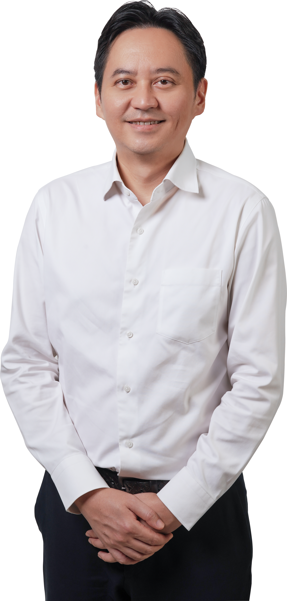

Building a better Kuala Lumpur.
Community leadership, public policy and ideas for a more liveable, inclusive and well-governed city.
About Ben Read My Writing
Ben Fong Kok Seng 方国昇
Ben Fong Kok Seng (方国昇) is a Kuala Lumpur-based community leader, entrepreneur and writer with a strong interest in urban governance, public policy and community development.
He serves as Chairman of MPPWP Zon Bukit Bintang and Treasurer of DAP Federal Territory Kuala Lumpur. He also serves on the WPKL Excise Licensing Board and is a Council Member and Management Committee Member of Majlis Sukan Wilayah Persekutuan (MSWP). His community work focuses on the everyday issues that shape life in the city — from neighbourhood infrastructure and public spaces to local businesses, sustainability and community welfare.
Through his writing and public engagement, Ben contributes ideas on Kuala Lumpur, governance and Malaysia's future, drawing on both his experience on the ground and his background in business.
Working with communities.
Bukit Bintang
Working with residents, community organisations and government agencies across Bukit Bintang on neighbourhood issues including infrastructure, cleanliness, safety, mobility and public amenities.
A Better Kuala Lumpur
Engaging on urban issues including local governance, pedestrian connectivity, public spaces, enforcement, flood mitigation and making Kuala Lumpur a more liveable city.
Community Initiatives
Supporting community programmes in education, youth and sports, welfare, sustainability and neighbourhood improvement — bringing government, civil society and local communities together.
Thoughts on our city and country.
Urban Governance & Kuala Lumpur
Selected writing on how we can build a better governed and more liveable city.
Community & Public Policy
Ideas on strengthening communities and improving public policy.
Malaysia
Commentary on politics, governance and the future of Malaysia.
Let's stay connected.
Follow Ben's work, community activities and writing through his official social media channels.